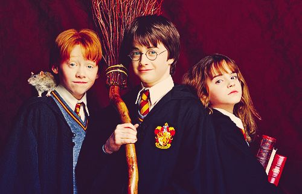
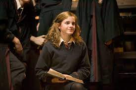
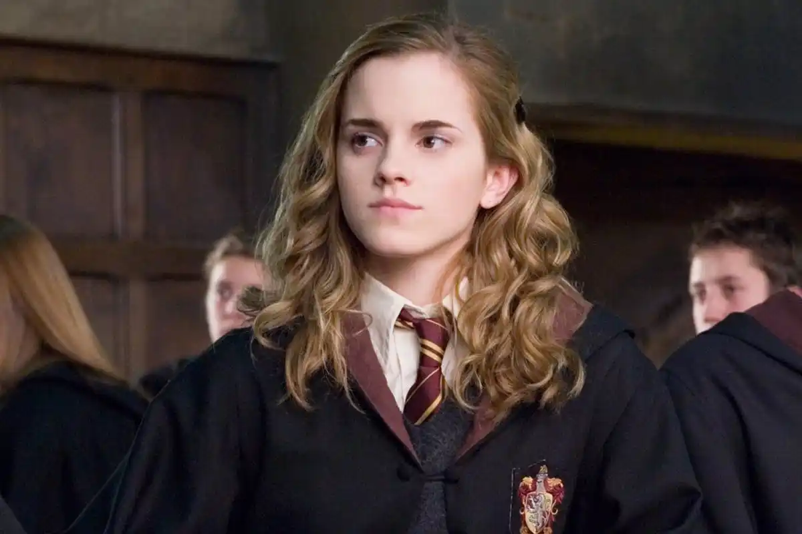
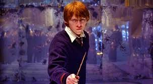
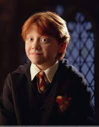

FRIENDSHIP OF THEM
HARRY POTTER
Harry is an orphan living with his abusive aunt and uncle, Vernon and Petunia Dursley and their bullying son, Dudley. On his eleventh birthday, Harry discovers he is a wizard when Rubeus Hagrid delivers him an acceptance letter to Hogwarts School of Witchcraft and Wizardry Harry James Potter is a fictional character and the titular protagonist in J. K. Rowling's series of eponymous novels. The majority of the books' plot covers seven years in the life of the orphan Harry, who, on his eleventh birthday, learns he is a wizard. Thus, he attends Hogwarts to practise magic under the guidance of the kindly headmaster Albus Dumbledore and other school professors along with his best friends Ron Weasley and Hermione Granger. Harry also discovers that he is already famous throughout the novel's magical community, and that his fate is tied with that of Lord Voldemort – the internationally feared Dark Wizard and murderer of his parents, James and Lily Potter. The book and film series revolve around Harry's struggle to adapt to the wizarding world and defeat Voldemort. Harry is regarded as a fictional icon and has been described by many critics, readers, and audiences as one of the greatest literary and film characters of all time. He was portrayed by Daniel Radcliffe in all eight Harry Potter films from Philosopher's Stone (2001) to Deathly Hallows – Part 2 (2011).
Harry is regarded as a fictional icon and has been described by many critics, readers, and audiences as one of the greatest literary and film characters of all time. He was portrayed by Daniel Radcliffe in all eight Harry Potter films from Philosopher's Stone (2001) to Deathly Hallows – Part 2 (2011).

HERMOINE GRANGER
Hermione is a Muggle-born Gryffindor,[4] who becomes best friends with Harry Potter and Ron Weasley. Rowling states that she was born on 19 September 1979[2] and she was nearly twelve when she first attended Hogwarts Hermione Jean Granger (/hɜːrˈmaɪəni ˈɡreɪndʒər/ hur-MY-ə-nee GRAYN-jər) is a fictional character in J. K. Rowling's Harry Potter series. She first appears in the novel Harry Potter and the Philosopher's Stone (1997), on the Hogwarts express as a first year student on her way to Hogwarts. After Harry and Ron save her from a mountain troll in the girls' restroom, she becomes best friends with them and often uses her quick wit, deft recall, and encyclopaedic knowledge to lend aid in dire situations. Rowling has stated that Hermione resembles herself as a young girl, with her insecurity and fear of failure.[2] The character has had immense popularity. The version of Hermione portrayed by Emma Watson in all eight Harry Potter films from Philosopher's Stone in 2001 to Deathly Hallows – Part 2 in 2011 was voted the best female character of all time in a poll conducted amongst Hollywood professionals by The Hollywood Reporter in 2016.[3]
 RON WEASLEY
Ronald Bilius Weasley is a fictional character in J. K. Rowling's Harry Potter fantasy novel series. His first appearance was in the first book of the series, Harry Potter and the Philosopher's Stone, as the best friend of Harry Potter and Hermione Granger. He is a member of the Weasley family, a pure blood family that resides in "The Burrow" outside Ottery St. Catchpole. Being the only member of the three main characters raised in magical society, he also provides insight into the Wizarding World's magical customs and traditions. Along with Harry and Hermione, he is a member of Gryffindor house and is present for most of the action throughout the series.
 
THEIR MAGIC MOMENTS
HISTORY OFHARRY POTTER